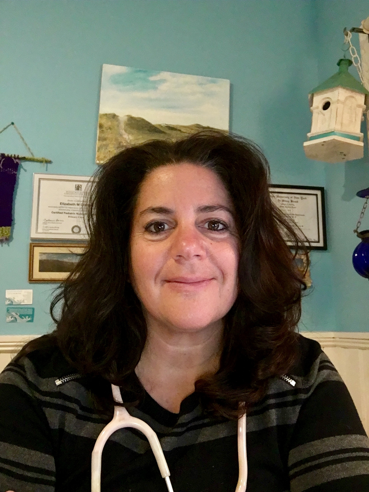

Our practitioners

Hamptons Medi Spa CEO and Founder Elizabeth Cramer Ernst
Nurse Practitioner>Practitioner
Meet Liz Cramer Ernst, NP, founder and owner of Hamptons Medi Spa. Liz has 30+ years experience in medicine. Her telemedicine business grew out of home visits she was doing in the Hamptons for visiting resort patients. In 2014, Liz’s mom suffered a spinal cord injury at the age of 79. After a few treacherous years, mom was able to live at home in a stable environment with all supplies and services in place as Liz monitored her remotely. Mom is now walking with assistance!!
Most of our patients report 90-100% symptom relief with Medical Marijuana. This usually happens within the first dose or so. Those who take longer need a little closer monitoring and fine tuning of their meds to get to that “sweet spot.” We have quadriplegic/ paraplegic patients, those who are suffering from PTSD, Holocaust survivors, children with seizures and neurological disorders, cancer patients pre and post therapy, as well as those will all kinds of neuropathy: pins and needles, pinched nerves, slipped disc, degenerative disk disease, spinal cord injury, spasticity. Chronic pain of the joints, fibromalasia, arthritis and Irritable Bowel Disease are all helped with MM. We have patients with chronic use and overuse injuries as well as pre and post surgery MM users. Most of our patients don’t want to take strong painkillers, as they need to function and are aware of the risk of addiction and side effects these meds can have.
Patients have reported: improved quality of life, improved blood sugar control for diabetics, stress relief, a good nights sleep for the first time in 12 years, a day without back pain for the first time in 10 years, etc. …..you can have great relief too!
We have high expectations for you because this is what others are reporting. The data and clinical research all support the amazing results of medical marijuana, yet patients are pleasantly surprised every day!
Check back for our blog, Pharmacist Q+A page, and more testimonials. We will be carrying some beautiful CBD products soon including topicals, tinctures and CBD Coffee!!
Thank you for visiting HamptonsMediSpa!
Be Well
Liz